スウェーデン出身の Eurodance系ユニットです。
自分ではメチャクチャ良いと思うのだが、
なぜかあんまし話題になっていない？？？（なった？？？）
ちなみに、このグループの
『Hurricane』
と『Oldshool』
もヨイです。(^.^;;;
（※動画もカッコイイです！！！）
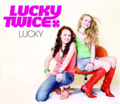
原曲は Kylie Minogue の『I
Should
Be So Lucky』です。
私は これの「Riffs
& Rays Mix」が 気に入っています。(^-^)
ちなみに、『Lucky』は 曲名。
「Lucky Twice」が
グループ名です。(^o^;;;
（※なお、曲名は『The Lucky Twice Song』となっている場合もあります）
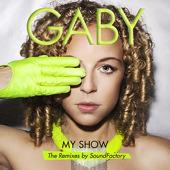
写真の顔、ちょっとコワイ...じゃなくって、(笑)
同じ名前の人が何人かいるみたいなので注意。
（※スペインの人ではないです）
私は これの「SoundFactory
Radio
Mix」が 気に入っています。
（※ミックス表記がない場合には３分45秒ぐらいのやつ）
（※「SoundFactory Paradise Anthem」でも Good!）
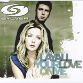
原曲は Information Society
かと思っていたのですが、
なんと意外や意外、ABBA だったんですね。(>_<)
バージョンは普通に「Radio
Mix」でいいです。(笑)
ただ、何度も聴いてると、
この人の歌い方が、ちょっと耳につくかも...
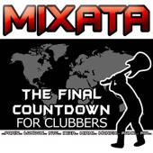
笑えるやつ。(^o^;;;
ではなく、一見タイトルだけ見ると、ちょっと期待が膨らむのですが、
期待通りのやつは、時間が長いバージョンなので、お間違えなく。(^o^;;;
（※ミックスの名称不明）
そうかと思うと、意味なく羅列される都市名・・・。
音楽に関係あるんだと思いますが、聞き取れないです。(^.^;;;
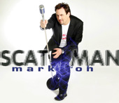
もう一つ笑えるやつといえば これ。(^o^;;;
めっちゃ懐かしい〜〜〜！！！（忘れてた）
Scatman John vs. Mark 'Oh です。
（※ただのリミックスもあります。別の人ですが）
この聴き飽きた(爆)じゃなくって、
遠吠えのようにも聞こえるスキャットに絡みつく重厚なエレクトロニックビートが、
ヤミツキになります。(^o^;;;
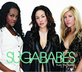
ちょっと古くてスミマセン。(^o^;;;ゞ
私は基本的にはこのテのＲ＆Ｂ系はキライなのですが、
(笑)
これの「DJ Prom
Mix」は
かなりカッコイイです。(^o^;;;
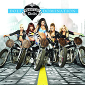
キライな系のＲ＆Ｂ・その２。(笑)
というか、かなりミーハーというか・・・。(^o^;;;
そのせいか、iTunes Storeでは Popに分類されてますね。(^.^;;;
（※Wikipediaでは Ｒ＆Ｂグループになってます）
でも、私が気に入っているのは、これの、
「Digital Dog
Radio Mix」とい
うバージョンで、
手に入るものでは、『Clubland
14』に収録されているものです。(^_^;
（※↑のジャケ写は ノーマルバージョンが収録されているアルバムです）
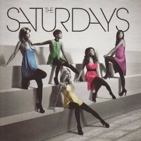
こちらは、Wikipediaも iTunes Storeも どちらも Popになってますが、
正直、Pussycat Dollsとどこが違うんだか疑問です。(^o^;;;
んで、このバージョンは、↑のアルバムに収録されているようなのですが、
困ったことに、iTunes Storeのほうの彼女らのページが作り途中なのか、
どこの誰のものかわからないアルバムが１つだけ登録されています。(=_=#;;;
まぁ、いずれ修正されるのでしょうけど...
（※てことで、リンクは張ってません）
なお、この曲（このバージョンのもの）は、
↑にも書いた『Clubland
14』に収録されています。(^_^;
（※恐るべし、Clubland...(=_=;;;）
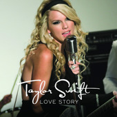
ミーハーつながり。(^o^;;; というか、これのどこがカントリー？(=_=#;;;
これをカントリーと言ったら、John Denverが怒るぞ。(笑)
つーか、あの人は、何があっても怒らなそうだけど...(爆)(爆)(爆)
って、そういう話ではなく、(笑)
これの「Digital
Dog Radio Mix」
が メチャクチャ良いです。(>_<)！！！
（＃どなたかが作ってくださったＰＶ？も）
というか、この曲のことを知ったのは、
Pussycat Dollsの そのバージョンの出来があまりにも見事だったので、
試みに検索かけてみたら、他にもいくつかあって、
その中の１つがこれで、かなりハマッてしまいました。(^o^;;;
ホントに、初めからこういう曲だったのではないかと思うような、
見事な違和感のなさというか、リミックスの手本のような曲ですね。(^.^;;;
元々のファンの人からすると、受け入れ難いのかもしれませんが、
私なんかは、元々の曲というか、最近の売れてる音楽自体、いいと思わないので、
このバージョンによって初めて彼女のことを知りました。(^_^;
おそらく、昔の本当のカントリーとかを知らない世代には、
こういう人も斬新というか魅力的に聴こえるのかなと思いますけど、
まぁ、良いと思って聴いてみると、なかなかヨイですね。(^.^;;;
ちなみに、リミックスバージョンは、いくつかあるのですが、
なぜか本体に含まれているものと（カップリングのつもり？）
別盤になっているものとがあって、
しかも、アメリカの iTunes Storeにはないのに 日本のストアにはあるという
珍しいものだったりします。(^_^;
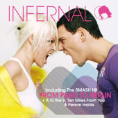
さらに古い...(^.^;;;
珍しくデンマークのデュオです。
メチャクチャカッチョイイですね〜。
2004年といえば、まだまだトランス系が全盛の頃でした
が、
その頃に、こんな曲が出てたなんて知りませんでした。（知ってた？？？）
それにしても、ウチにあるやつと、どれもジャケ写が同じの
がないので、
アルバムのやつ使用。リンクはシングル盤に。
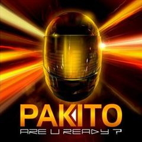
そういえば、iTunes Store の
ジャケ写って
小さいですよねぇ。(^.^;;;
まぁ、写真だけでは ナカミは わからないので、重要ではないとは思うのですが...
てことで、これは、iTunes Store では
手に入りません。(=_=#;;;
（※これ以外の曲は何曲かあるみたいです
が...）
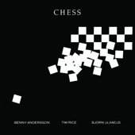
思いっきり古いです(笑)＆ジャケット地味です。(爆)
(爆)(爆)
それもそのはず、ミュージカルのサントラ盤です。
たまたま偶然発見＆思い出してＤＬ。
すっかり忘れていましたが、知る人ぞ知る大ヒット
曲です。(^_^)
現在入手できるバージョンはいくつかあるみたいなのです
が、
オススメはやはりオリジナルでしょうか？
私は とある所から購入しましたが、
iTunesなら↑のやつがいいです。（※私も後から購入）
最初のオーケストラの部分が長く、
ある意味、このエキゾチックな世界を堪能できます。(^.^;;;
シングルバージョンのほうは、
その最初のオーケストラの部分はないので注意。
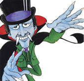
笑えるやつ。(^o^;;;
昔のディスコ・ミュージックです。
昔のだけど、iTunesで配信されたのは 2007年。
他は探してないけど、おそらく日本でしか手に入らないと思う。
本物の（当時の）ジャケットとは微妙に違うらしいのです
が、
ほぼ、こんな感じ。(^_^;
【編集後記(爆)(爆)(爆)】
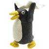